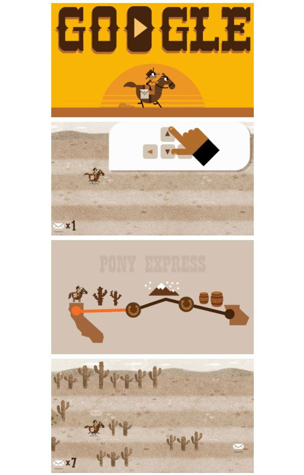
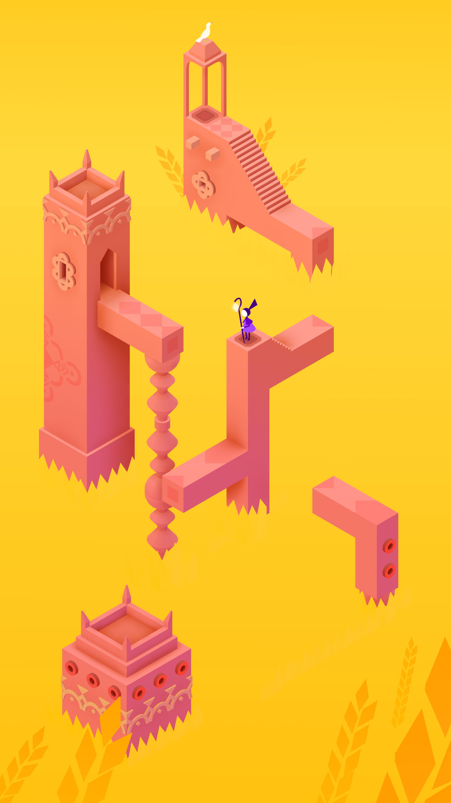

Using Google Games as a framing device is an appealing prospect for office workers on their scroll break. They know how to make a simple, engaging interface that can be learned, repeatable, and nostalgic in less than a minute. The travel feature of “Pony Express” matches my game’s main mechanics: I liked the straightforward objective, lack of instructions, and increasing complication. I returned to the game several times to try to beat myself.

I’m looking towards Monument Valley for the reveal of surprise actions, the large amounts of whitespace, and vector-like stylization. The puzzle game is also dependent on a constant, vertical scroll to act as the users’ time-limitation, and it relies on large, expressive shapes over details to world-build. I love the atmospheric color palette and simplicity of character. It’s charming, intriguing, and haunting all at once.